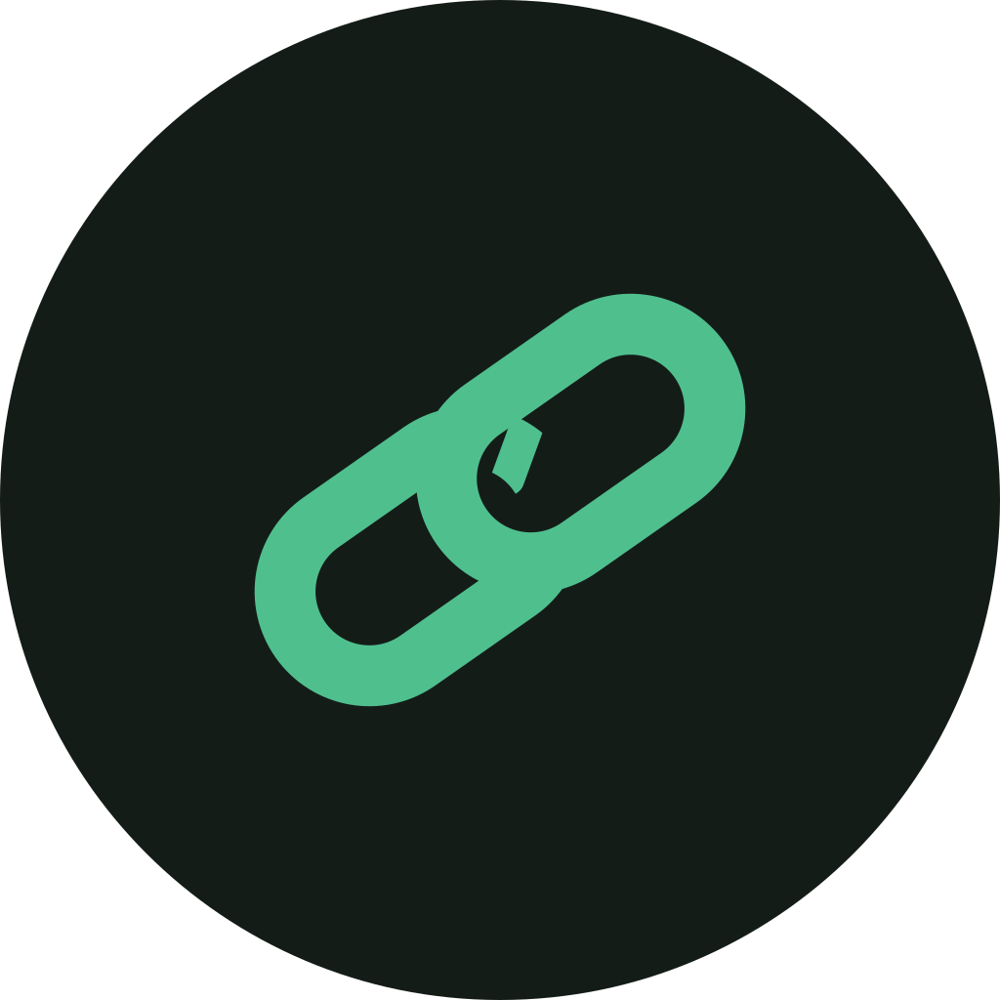

▪ под 32 пиксела влиза по-дебелият вариант. Същият знак, различен ход — 6,5 на 16 пиксела дава под два пиксела и знакът избледнява.
Един цвят, без ефекти. Ако знакът има нужда от втори тон, за да се чете, той не е знак.

тъмен favicon 32 16Празното наоколо е половин височина на знака. Нищо не влиза в него — нито текст, нито ръб на снимка.